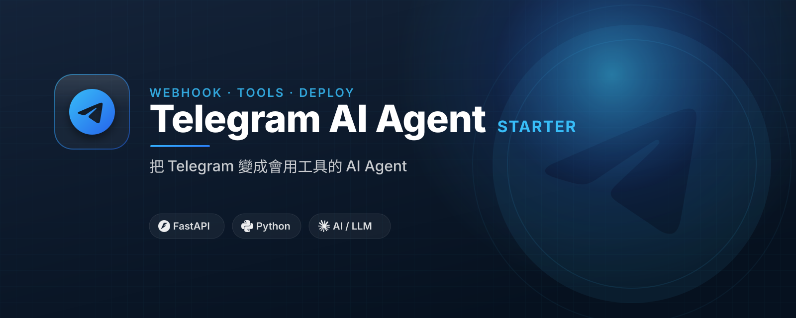

從一個 bot token 開始，做出會回覆、會調工具、可部署的 AI agent。

Get the workshop notes, updates, and example walkthrough for this starter.
Designed as a distinct CI/landing page for yazelin/telegram-ai-agent-starter. Contact: yaze.lin.j303@gmail.com